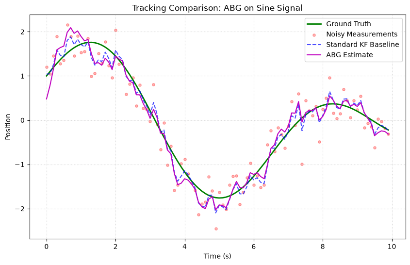
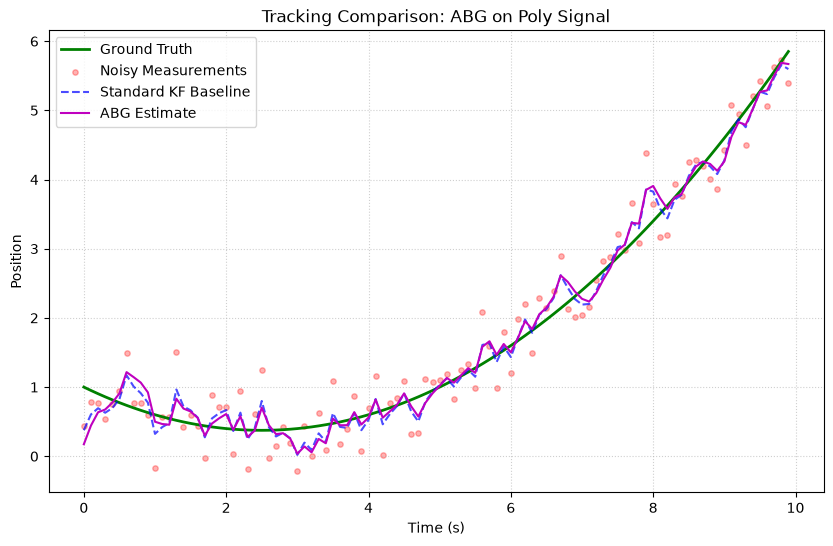
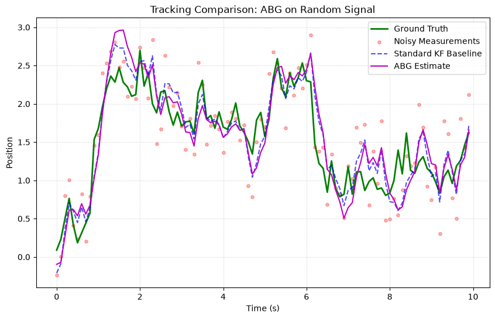

Alpha-Beta-Gamma Filter (ABG)¶
The Alpha-Beta-Gamma Filter is a lightweight, fixed-gain filter for tracking position, velocity, and acceleration. It's the simplest filter in kalbee — no matrices, no inversions, just three tuning parameters.
Fundamental Concepts¶
The Idea¶
The ABG filter is a simplified form of the Kalman Filter where the gains are fixed rather than computed optimally at each step. It uses three gain parameters:
- α (alpha) — position correction gain
- β (beta) — velocity correction gain
- γ (gamma) — acceleration correction gain
The Algorithm¶
Predict (kinematic model):
Update (apply corrections using residual \(r = z - \hat{x}\)):
Gain Tuning Guidelines¶
| Gains | Behavior |
|---|---|
| High α, β, γ | Fast response, noisy estimates |
| Low α, β, γ | Smooth estimates, slow response |
| α = 1, β = 0, γ = 0 | Pure position tracking (no prediction) |
When to Use¶
| ✅ Use ABG when | ❌ Don't use when |
|---|---|
| Low-compute environment | Need optimal estimation (use KF) |
| Simple kinematic tracking | System is non-linear |
| Fixed gains are acceptable | Need adaptive noise estimation |
| Quick prototyping | Multi-dimensional state space |
How to Use¶
import numpy as np
from kalbee import AlphaBetaGammaFilter
# State: [position, velocity, acceleration]
state = np.array([[0.0], [0.0], [0.0]])
# Tuning gains
alpha = 0.5 # Position correction
beta = 0.4 # Velocity correction
gamma = 0.1 # Acceleration correction
abg = AlphaBetaGammaFilter(state, alpha, beta, gamma)
# Track a target
dt = 1.0
measurements = [1.0, 2.0, 3.1, 3.9, 5.1, 6.0, 7.2, 7.8, 9.1, 10.0]
for z in measurements:
abg.predict(dt=dt)
abg.update(np.array([[z]]), dt=dt)
pos, vel, acc = abg.x.flatten()
print(f"Measurement: {z:.1f} "
f"Position: {pos:.2f} Velocity: {vel:.2f} Accel: {acc:.3f}")
Interface Difference
Unlike other filters, the ABG update() takes an additional dt parameter because the gain corrections depend on the time step.
Run an Experiment¶
The ABG filter is not included in the experiment runner by default (it uses a different state model). You can test it manually:
import numpy as np
from kalbee import AlphaBetaGammaFilter
state = np.array([[0.0], [0.0], [0.0]])
abg = AlphaBetaGammaFilter(state, alpha=0.8, beta=0.5, gamma=0.1)
# Generate sine signal
t = np.arange(0, 10, 0.1)
true_pos = np.sin(t)
noise = np.random.randn(len(t)) * 0.3
errors = []
for i in range(len(t)):
abg.predict(dt=0.1)
abg.update(np.array([[true_pos[i] + noise[i]]]), dt=0.1)
errors.append(abs(abg.x[0, 0] - true_pos[i]))
print(f"Average error: {np.mean(errors):.4f}")
Simulation Results¶
Here is the tracking performance of the Alpha-Beta-Gamma Filter (ABG) compared against the Standard Kalman Filter baseline on three different signal trajectories:
1. Sine/Cosine Signal¶

- Analysis: The ABG filter uses fixed gains (\(\alpha=0.4, \beta=0.1, \gamma=0.01\)). It behaves as a simple smooth tracking filter, lagging slightly behind the adaptive Standard KF baseline which changes its Kalman Gain dynamically based on covariance propagation.
2. Polynomial (Degree 2) Signal¶

- Analysis: Since the ABG models acceleration with a constant gain factor, it tracks the quadratic curve with less lag than the standard Constant Velocity KF baseline, proving its effectiveness for constant acceleration profiles when properly tuned.
3. Random Walk Signal¶

- Analysis: The ABG filter tracks the random walk smoothly, but shows slightly larger deviations than the standard KF since its static gains cannot adapt to changing state uncertainties.